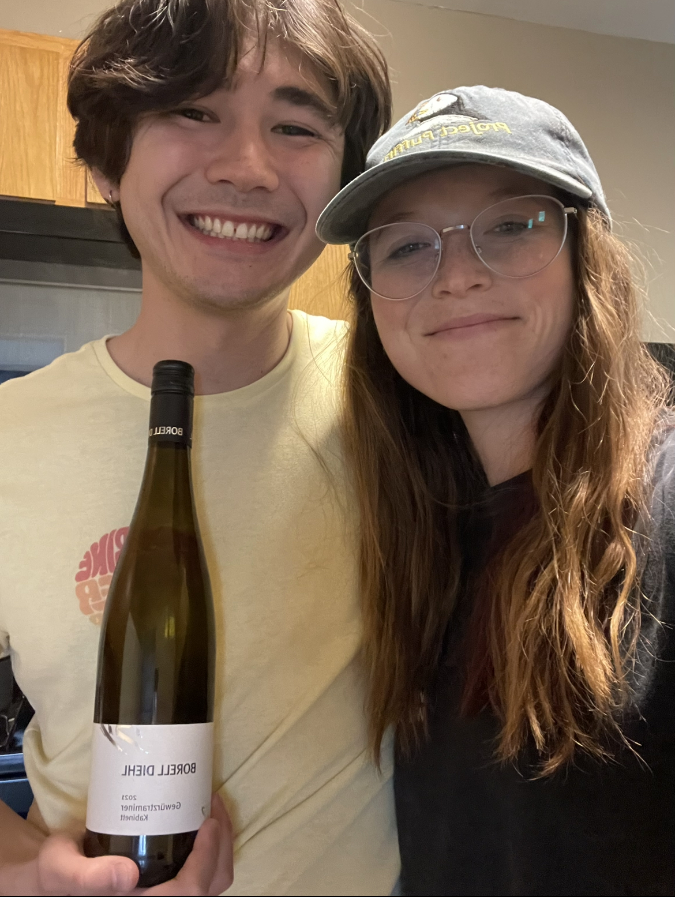

Gewürztraminer
What is it?
Gewürztraminer is a white grape that flourishes in cooler climates. It is most commonly grown in Germany, though it can be found in Italy, New Zealand, and the USA, among other locations [1]. The name of the wine comes from the German word "Gewürz", which means "herb" or "spice", and the Traminer region of Italy, so the translation is approximately "Spiced Traminer" [2].
Primary flavors of Gewürztraminer (according to Ryan's wine book) are lychee, rose, grapefruit, tangerine, and ginger [1]. An interesting fact about these primary flavors: lychee and the Gewürtztraminer grape have the same aroma compounds [3]. The aromas of lychee are actually a way to distinguish Gewürztraminer from other, similar wines.
Suggested food pairings are dishes in Middle Eastern and Moroccan cuisine, as both use nuts, dried fruits, and ginger [1]. The idea is to bring out the ginger and fruit essences in the wine. We had this wine with Greek-style chickpea and couscous bowls. This wine was another find from bin 105 in Lincoln. We can't wait to go back to this fun store and find more wines to try! We're also interested to see what Steve thinks we should try next.
Molly's Rating and Tasting Notes
8.0. The nose is exactly like lychee! Pretty crazy how similar the aromas are. The wine itself is acidic to the point of feeling like carbonation on the tongue (but not in a bad way). The primary flavors (to me) are floral with a slight fruity element. I could see how rose and grapefruit are listed as primary flavors, I suppose. The wine is relatively light and nicely balanced. The Kabinett style (what we had) is apparently dry-to-off-dry, so I would be curious to taste a Gewürztraminer that is some different style-- I feel like I'd be fine with a slightly sweeter wine, even though this isn't bad at all. Overall, I'd say this is a solid wine that I would definitely drink or buy again.
Ryan's Rating and Tasting Notes
8.1. Definitely smells like lychee. I'm also getting Meyer lemon, rose water and Mike and Ike. On the tongue it is not as sweet as the nose would suggest. I'm getting some initial notes of citrus, in particular mandarin and grapefruit. I'm also getting dill, but that may be coming from the couscousbowls we paired it with. There's also some sweet ginger at the end, which complements the grapefruit taste.There is a good mouth feel, as it tingles the tongue and fills the mouth with an effervescent sensation. I'm not sure if its carbonated (pretty sure it's not) but it sure feels like it is. Would definitely recommend this wine. It is a fun, perky, not-too-sweet, easy sipper.
References
[1] Madeline Puckette and Justin Hammack. Wine Folly: The Master Guide. Avery - A Penguin Imprint, New York, NY, 2018.
[2] Stuart Wilson (1996).
[3] Peter K. C. Ong and Terry E. Acree (1999). "Similarities in the Aroma Chemistry of Gewürztraminer Variety Wines and Lychee (Litchi chinesis Sonn.) Fruit".
[4] Gewürztraminer. https://winefolly.com/grapes/gewurztraminer/ Wine Folly. Accessed March 2023.
[5] J. Robinson (2006).